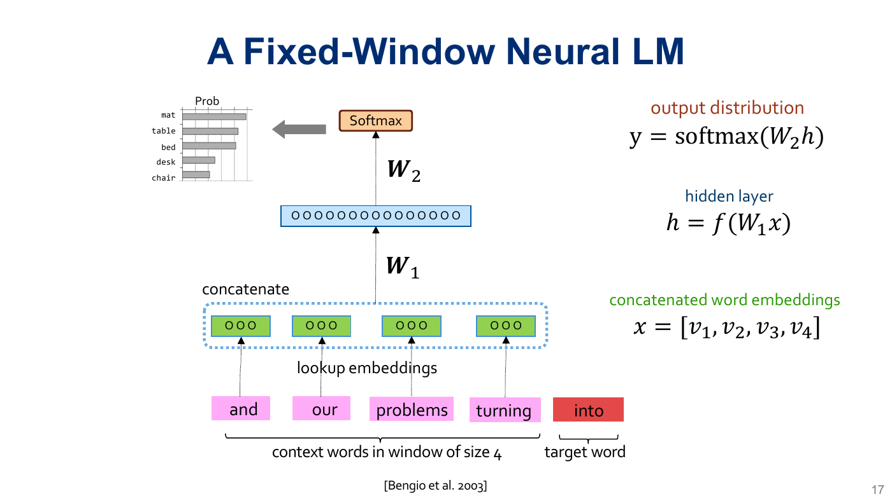

A language model can learn a next-token distribution without storing a separate count table for every context. We turn token IDs into learned vectors, concatenate a short ordered context, and use an MLP to predict the next token. The same next-token loss trains both the network and the vectors that represent its inputs.
This is the bridge between language modeling, backpropagation and PyTorch, and tokenization. Work through the examples before revealing their answers.
- Scope
- Companion to slides 1–21 of the current MLP deck. This handout develops embeddings and fixed-window LMs; the session's introduction to self-attention has a separate companion reading.
- Time
- About 50–65 minutes for the reading and checks, plus 25–35 minutes for the code lab. No additional assigned paper.
- By the end
- Trace text to IDs to embeddings; derive every forward-pass shape; build causal training pairs; explain which parameters receive gradients; distinguish parameter sharing from memorized counts; demonstrate an information limit of fixed-window models.
- Assumes
- Softmax and cross-entropy, matrix multiplication, minibatch shapes, autograd, and token IDs. See Handout #5 §2 and Handout #7 for review.
Find the reading for a slide topic
| Slides | Reading |
|---|---|
| 1–6 | The conditional prediction task |
| 7–13 | Embedding lookup and its gradients |
| 14–17 | The forward pass and joint training |
| 18, 20 | Sharing statistical strength |
| 19, 21 | Context limits and the next architectures |
| Implementation extension | Runnable lab and reading real PyTorch code |
1The task: predict the next token
Slides 1–6, 15–16
Let $w_1,\ldots,w_T$ be token IDs after a fixed tokenizer has encoded a document. A causal language model factorizes the sequence probability into next-token conditionals. Our approximation keeps only the last $k$ tokens:
$$p_\theta(w_{1:T})=\prod_{t=1}^{T}p_\theta(w_t\mid w_{<t}),\qquad p_\theta(w_t\mid w_{<t})\approx p_\theta(w_t\mid w_{t-k:t-1}).$$Here $k$ is the number of context tokens. An n-gram model with the same amount of context has order $n=k+1$, because the target is part of the n-gram. We will use $k=4$ throughout the worked architecture.
For and our problems turning into ideas, one example is [and, our, problems, turning] → into; the next is [our, problems, turning, into] → ideas. The labels come from the text itself. This is self-supervision: creating a target does not require a human to annotate each window.
1.1 Boundaries and causality
To predict the first token, prepend $k$ beginning-of-sequence tokens (<bos>). Append an end-of-sequence target (<eos>) if the model should learn when to stop. This is a modeling convention, not a requirement to score padding as ordinary text. Build windows within documents, and split documents into training and validation sets before constructing overlapping windows. Otherwise nearly identical windows can leak across the split.
The target and future tokens must be absent from the input. Predicting a missing token using both left and right context is a useful task, but it is not this autoregressive next-token conditional. During generation, the right context does not yet exist.
A model sees four previous tokens. What n-gram order uses the same context? With no boundary padding, how many training pairs come from six tokens?
Work it out, then reveal the answer
Order 5. There are two pairs: targets at positions 5 and 6. With four <bos> tokens and an appended <eos>, the convention in this handout gives seven targets: six text tokens and EOS.
2Embedding lookup: IDs become trainable vectors
Slides 7–13
A token ID is an address, not a numerical measurement. ID 20 need not be twice as similar to ID 10 as ID 5 is. Instead, keep an embedding table $E\in\mathbb R^{V\times d}$, where $V$ is the vocabulary size and $d$ is the vector dimension. Retrieve row $E[i]$ for ID $i$. A word, punctuation mark, byte, or subword piece can all have a row.
For an illustrative word tokenizer, The movie was great! might become [The, movie, was, great, !], then five integer IDs, then five vectors. A subword tokenizer may produce a different number of pieces. The lookup operation does not choose the tokenization and does not change the vocabulary.
2.1 A lookup you can compute by hand
Suppose IDs 0, 1, 2, 3 name <bos>, and, our, and into, and the table is:
Looking up [1, 2, 1] returns [[1, 2], [-1, 3], [1, 2]]. Repeated IDs retrieve identical vectors. Their surrounding contexts do not change the table lookup; the later network combines those vectors with other inputs.
Lookup is equivalent to multiplying a one-hot row vector by $E$, but implementations gather the selected rows without materializing a $V$-dimensional one-hot vector. This saves work and memory; it does not remove the table's $Vd$ trainable parameters.
2.2 How can an integer lookup be differentiable?
We do not differentiate the integer ID. We differentiate the floating-point entries that it selected. For the ordinary dense-gradient embedding used here:
$$\frac{\partial\mathcal L}{\partial E[i]}=\sum_{(b,j):\,c_{b,j}=i}\frac{\partial\mathcal L}{\partial v_{b,j}}.$$If a token occurs several times in the batch, its row receives the sum of those contributions. Rows not selected have zero data-loss gradient through the input embedding path. Weight decay, optimizer state, special padding behavior, or tying the input table to the output layer can change which rows are updated; none is used in this example.
For IDs [1, 2, 1], incoming gradients on their vectors are [1, 0], [0, 2], and [3, -1]. What gradient reaches each table row?
Work it out, then reveal the answer
Row 1 gets [4, -1]; row 2 gets [0, 2]. Rows 0 and 3 get [0, 0]. The two occurrences of ID 1 share one parameter row, so their gradients add.
3The forward pass: preserve order, then predict
Slides 14–17
For one context, retrieve $v_1,\ldots,v_k\in\mathbb R^d$ and concatenate them in chronological order. For the mathematical equations, use column vectors:
$$x=[v_1;\ldots;v_k]\in\mathbb R^{kd},\qquad h=f(W_1x+b_1),\qquad z=W_2h+b_2,\qquad p_i=\frac{e^{z_i}}{\sum_{j=1}^{V}e^{z_j}}.$$$z$ contains logits, unrestricted scores. Softmax produces nonnegative probabilities that sum to one over the full vocabulary, including the target. The activation $f$ may be tanh or ReLU. The biases are included here even though the slide equations omit them.

| Object | Shape | Example: $k=4,d=3,H=8,V=8$ |
|---|---|---|
| Input embedding table $E$ | $V\times d$ | $8\times3$ |
| Concatenated context $x$ | $kd$ | 12 |
| $W_1$, $b_1$ | $H\times kd$, $H$ | $8\times12$, 8 |
| Hidden vector $h$ | $H$ | 8 |
| $W_2$, $b_2$ | $V\times H$, $V$ | $8\times8$, 8 |
| Logits and probabilities | $V$ | 8 each |
3.1 Concatenation is an architectural choice
The vectors for dog bites person and person bites dog are placed into different slots. $W_1$ has a distinct block of columns for each slot, so the network can treat the same token differently at different relative positions. Averaging the vectors would make these contexts identical and erase their order. Concatenation preserves order without adding a separate positional-encoding layer.
With $B=2,k=4,d=3,H=8,V=8$, list the shapes from IDs through logits. Which axis should softmax normalize?
Work it out, then reveal the answer
[2,4] → [2,4,3] → [2,12] → [2,8] → [2,8]. Softmax normalizes the vocabulary axis, the final dimension. Applying it across the batch would make one example’s probabilities depend on the other example.
4Joint training with next-token cross-entropy
Slide 16; training detail building on Handouts #5–#7
For a target ID $y$, minimize the negative log-probability of that token. Over $N$ prediction targets:
$$\mathcal L=\frac1N\sum_{t=1}^N-\log p_\theta(y_t\mid c_t),\qquad \theta=\{E,W_1,b_1,W_2,b_2\}.$$One backward pass trains all of these parameters together. The vectors are useful because they help predict tokens under this objective; there is no separate label saying which words should be synonyms. Similar vectors can support generalization, but meaningful geometry is a learned outcome rather than a guarantee.
4.1 One numerical prediction and its gradient
For a toy three-token output vocabulary [into, table, chair], let the logits be $[\log 2,0,0]$. Softmax gives $[0.5,0.25,0.25]$. If the target is into, the loss is $-\log0.5=\log2\approx0.6931$ nats. The logit gradient is:
A direct gradient-descent step on these logits would increase the target logit and decrease the others. In a real model, we update the parameters that produced the logits. Backpropagate through $W_2$, the activation, $W_1$, and the concatenation; split the context gradient into $k$ blocks and add each block to its selected embedding row.
F.cross_entropy(logits, targets) expects raw logits and internally computes stable log-softmax plus negative log-likelihood. Alternatively, use F.nll_loss(log_probs, targets) after F.log_softmax. Do not feed ordinary softmax probabilities into cross-entropy as though they were logits.4.2 What does a lower loss establish?
Evaluate held-out targets with the same tokenizer and scoring convention. If mean negative log-likelihood uses natural logs, perplexity is $\exp(\mathcal L)$. A uniform predictor has loss $\log V$ and perplexity $V$. Average total loss over the number of scored targets, rather than averaging unequal batch means equally. Lower training loss alone does not establish better held-out language modeling.
The target gets probability 0.25. What are this example’s loss and perplexity? Does a positive probability for every vocabulary token solve the unknown-token problem?
Work it out, then reveal the answer
Loss is log(4) ≈ 1.3863 nats and this one-target perplexity is 4. Softmax covers existing IDs only. Text absent from a word vocabulary still needs an unknown-token policy or a tokenizer with suitable character/byte coverage.
5Why shared parameters help sparse contexts
Slides 18 and 20
A count model estimates a continuation distribution from occurrences of a discrete context. With large contexts, many strings are rare or absent. Neural LMs reuse the same embedding rows and the same prediction network across training examples. Evidence from students opened their can influence predictions for pupils opened their through shared parameters, even when the second exact context is rare.
This does not guarantee that the model recognizes every paraphrase. It learns similarities supported by its training signal. Smoothing and backoff in count-based n-grams also share evidence through shorter contexts; the neural model adds learned distributed representations and a shared nonlinear predictor.
5.1 Parameter growth: what is being held fixed?
For the untied, one-hidden-layer model above, the parameter count is:
$$P=Vd+Hkd+H+VH+V.$$At $V=8,d=3,H=8,k=4$, this is $24+96+8+64+8=200$. Increasing $k$ by one adds $Hd=24$ parameters in $W_1$, while the other dimensions are held fixed. Embedding and output parameters can still dominate for a large vocabulary.
A dense table of all order-$(k+1)$ n-gram outcomes has $V^{k+1}$ entries, or $V^k(V-1)$ free parameters after normalization. Practical count models store observed n-grams sparsely, not that entire dense table. Thus “linear versus exponential” describes these particular scaling comparisons, not a universal measured memory ratio between implementations.
The historical evidence for learning distributed word representations jointly with a next-word predictor is Bengio et al. (2003), A Neural Probabilistic Language Model. Our equations are a simplified architecture, not a reproduction of every option in that paper.
Keeping $V=8,d=3,H=8$ fixed, increase $k$ from 4 to 6. What is the new parameter count? Does the embedding table grow?
Work it out, then reveal the answer
The new count is 248: two extra slots add 2 × 8 × 3 = 48 weights. The embedding table remains 8 × 3; the model reuses those rows in every slot.
6The window imposes an information limit
Slides 19 and 21
Consider two prefixes:
Alice left the key by the door. Later, the key belonged to
Bob left the key by the door. Later, the key belonged toThe final four tokens are identical: the key belonged to. A deterministic $k=4$ model receives exactly the same input for both, so it must produce exactly the same next-token distribution. It cannot distinguish Alice from Bob on the basis of the discarded prefix, regardless of its hidden width, number of layers, or training time.
This is different from failing to fit a complicated function of the visible input. Adding depth may improve that function but cannot recover information that never entered the network. Increasing the window exposes more context, at the cost of a larger first layer and more work per prediction.
| Architecture | How past context is represented | Main limitation highlighted here |
|---|---|---|
| Fixed-window MLP | Concatenation of the last $k$ token vectors | Earlier tokens are inaccessible |
| Recurrent LM | A recurrent state updated as tokens arrive | Can use variable-length history, but may struggle to retain long-range information; sequence processing is sequential |
| Causal Transformer | Attention over permitted earlier positions | A different route for combining context; still subject to the chosen context limit and computational cost |
These are architectural distinctions, not disjoint historical eras or a guarantee that every newer model beats every older one. For this lecture, the important transition is from a fixed list of input slots toward more flexible ways of using earlier tokens.
Your four-token model fails on the Alice/Bob pair. A colleague proposes five more hidden layers. Can that fix the distinction? What input change could?
Work it out, then reveal the answer
No: both examples still have identical inputs. A sufficiently large window including the name, or an architecture carrying information from earlier positions, could make the inputs distinguishable. Access to the information is necessary; successful learning is an additional requirement.
7Runnable lab: a complete small MLP LM
Implementation extension of slides 13–17
The following is original companion code, using an intentionally tiny word vocabulary. Save it as mlp_lm.py and run it with PyTorch installed. It tests wiring and tensor shapes, not generalization: both short sentences are training data. A real experiment needs a separate validation corpus and a tokenizer fixed consistently across splits.
import math
import torch
from torch import nn
from torch.nn import functional as F
torch.manual_seed(7)
torch.set_num_threads(1)
k, d, H = 4, 3, 8
sentences = [
"and our problems turning into ideas".split(),
"and our ideas turning into problems".split(),
]
vocab = ["<bos>", "<eos>"] + sorted({w for s in sentences for w in s})
stoi = {w: i for i, w in enumerate(vocab)}
V = len(vocab)
contexts, targets = [], []
for sentence in sentences:
ids = [stoi["<bos>"]] * k + [stoi[w] for w in sentence] + [stoi["<eos>"]]
for t in range(k, len(ids)):
contexts.append(ids[t-k:t])
targets.append(ids[t])
X = torch.tensor(contexts, dtype=torch.long)
y = torch.tensor(targets, dtype=torch.long)
class WindowLM(nn.Module):
def __init__(self):
super().__init__()
self.embedding = nn.Embedding(V, d)
self.hidden = nn.Linear(k * d, H)
self.output = nn.Linear(H, V)
def forward(self, ids):
vectors = self.embedding(ids) # [B, k, d]
x = vectors.flatten(start_dim=1) # [B, k*d]
h = torch.tanh(self.hidden(x)) # [B, H]
return self.output(h) # [B, V], raw logits
model = WindowLM()
assert X.shape == (14, 4) and y.shape == (14,)
assert model(X).shape == (14, 8)
assert sum(p.numel() for p in model.parameters()) == 200
optimizer = torch.optim.Adam(model.parameters(), lr=0.03)
with torch.no_grad():
initial = F.cross_entropy(model(X), y).item()
for step in range(400):
optimizer.zero_grad(set_to_none=True)
loss = F.cross_entropy(model(X), y)
loss.backward()
optimizer.step()
model.eval()
with torch.no_grad():
final = F.cross_entropy(model(X), y).item()
print(f"training loss: {initial:.4f} -> {final:.4f}")
print(f"training perplexity: {math.exp(final):.4f}")
assert final < initial
# Verify repeated-ID gradients independently of the MLP.
lookup = nn.Embedding(4, 2)
ids = torch.tensor([1, 2, 1])
incoming = torch.tensor([[1., 0.], [0., 2.], [3., -1.]])
(lookup(ids) * incoming).sum().backward()
assert torch.equal(lookup.weight.grad,
torch.tensor([[0., 0.], [4., -1.], [0., 2.], [0., 0.]]))
# Both inputs have the same visible suffix; full prefixes are not passed in.
a = torch.tensor([[stoi[w] for w in "and our problems turning".split()]])
b = a.clone()
assert torch.equal(model(a), model(b))
# Generate using only the most recent k IDs; stop at EOS or the limit.
torch.manual_seed(11)
history = [stoi["<bos>"]] * k
generated = []
with torch.no_grad():
for _ in range(12):
logits = model(torch.tensor([history[-k:]]))
logits[:, stoi["<bos>"]] = -torch.inf # BOS is a context-only marker here
probs = logits.softmax(dim=-1)
next_id = torch.multinomial(probs[0], 1).item()
if next_id == stoi["<eos>"]:
break
generated.append(vocab[next_id])
history.append(next_id)
print("sample:", " ".join(generated))
The two sentences share the context [<bos>, <bos>, and, our] but have different next tokens. A model should represent that ambiguity with a distribution, not attain zero loss on both identical inputs. The sampling mask removes the context-only BOS marker and renormalizes the distribution; it does not change the training loss.
Replace flatten(start_dim=1) by flatten(start_dim=0). Predict the shape and failure before running it. Then repair it.
Work it out, then reveal the answer
The embedding output is [14,4,3]. Flattening from dimension 0 gives one vector of length 168, while the hidden layer expects 12 features per example. The matrix multiplication fails. Starting at dimension 1 preserves 14 separate examples and produces [14,12].
Create two identical context rows with different target IDs. Can the network achieve probability 1 for both targets? Now add a distinguishing earlier token and increase the window.
Work it out, then reveal the answer
No. If two equally frequent conflicting targets share the only identical context and the other probabilities approach zero, their best probabilities are 0.5 each and their mean loss approaches log(2). A larger window can separate them only if it actually includes the distinguishing token. Rebuild the data and resize the first layer when changing the window.
8Read real code: PyTorch’s embedding tutorial
Guided code-reading lab
e924720de192. Read only the “An Example: N-Gram Language Modeling” section first. The later CBOW model solves a different task. Excerpts below are verbatim from this pinned revision.8.1 Recognize the model you just built
word_embeddings_tutorial.py · NGramLanguageModeler
class NGramLanguageModeler(nn.Module):
def __init__(self, vocab_size, embedding_dim, context_size):
super(NGramLanguageModeler, self).__init__()
self.embeddings = nn.Embedding(vocab_size, embedding_dim)
self.linear1 = nn.Linear(context_size * embedding_dim, 128)
self.linear2 = nn.Linear(128, vocab_size)
def forward(self, inputs):
embeds = self.embeddings(inputs).view((1, -1))
out = F.relu(self.linear1(embeds))
out = self.linear2(out)
log_probs = F.log_softmax(out, dim=1)
return log_probs
embeddings is §2’s table; linear1 combines the ordered slots from §3; linear2 produces vocabulary logits. The tutorial uses ReLU, 128 hidden units, and returns log-probabilities. Its training loop therefore uses nn.NLLLoss(), the second valid interface from §4.
The reshape .view((1, -1)) assumes one context at a time. With context size 2 and embedding dimension 3, a single input of shape [2] becomes [1,6]. Feeding a batch of two contexts, shape [2,2], instead becomes [1,12] and fails at the first linear layer, which expects 6 features. The class is not a general batched implementation.
8.2 Check the order of the training pairs
word_embeddings_tutorial.py · ngrams list comprehension
ngrams = [
(
[test_sentence[i - j - 1] for j in range(CONTEXT_SIZE)],
test_sentence[i]
)
for i in range(CONTEXT_SIZE, len(test_sentence))
]
The comprehension enumerates the most recent context token first. For When forty winters, its pair is [forty, When] → winters. Our lab uses oldest first, [When, forty] → winters. Either convention works if training and generation agree; switching only at generation changes which positional block receives each token. Also notice that vocabulary IDs built by enumerating a set are not a portable serialization scheme: save the mapping with the model or build it deterministically.
In the pinned class, replace F.log_softmax by F.softmax, leaving NLLLoss unchanged. For zero logits and a three-token vocabulary, compute the reported loss before and after. Why is the new result invalid?
Work it out, then reveal the answer
The correct log-probabilities are all -log(3), so NLL is log(3) ≈ 1.0986. Softmax outputs 1/3; NLL treats these values as log-probabilities and returns -1/3. A negative “negative log-likelihood” here exposes the mismatched interface. Restore log-softmax, or return raw logits and change the loss to cross-entropy.
Edit the pinned class so it accepts [B,k] IDs, preserves the batch axis, and returns [B,V] raw logits. Change the training loss accordingly. Test with one and two examples; show that the two-example output equals concatenated single-example outputs.
Work it out, then reveal the answer
Replace the reshape by self.embeddings(inputs).flatten(start_dim=1); return out instead of log-probabilities; use cross-entropy with long targets of shape [B]. The modified interface requires a batch dimension even for one context. Use torch.testing.assert_close to compare batched and separate calls. No batch-dependent layer is present, so the results agree within numerical tolerance.
9Before moving on
The model learns an ordered, fixed-window conditional distribution. Learned embeddings and a shared MLP let evidence affect many contexts, while the next-token objective supplies the supervision. Joint training improves what the model does with the visible context; architecture determines which context is visible.